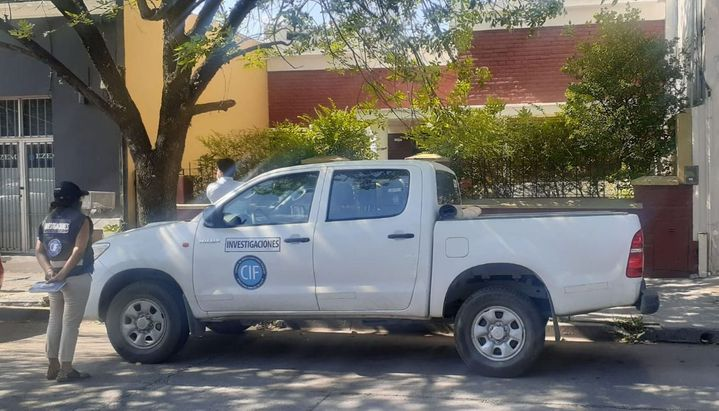
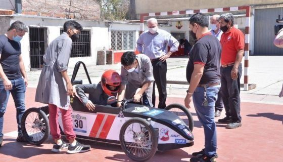
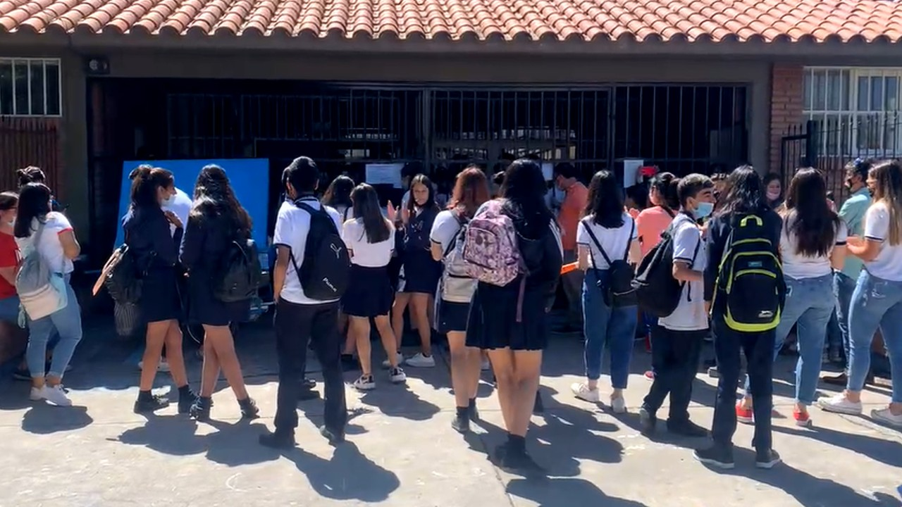

El Mundo Salta es un diario argentino con sede en la ciudad de Salta, capital y ciudad más poblada de la provincia homónima en el noroeste del país. Es el de más extensa trayectoria en la historia de la provincia.
Doble crimen en la Circunvalación Oeste: más allanamientos e incautaciones

3 DE NOVIEMBRE 2021 - 19:43
El doble crimen de Jonathan Tolaba y Romina Zerda, lejos de concluir con las tres detenciones y el fallecimiento de una persona en General Güemes, tuvo otros dos allanamientos con incautaciones de drogas.
Fuentes vinculadas a la investigación indicaron a El Tribuno que los allanamientos fueron en calle España al 1100 (en el domicilio de la persona que fue encontrada sin vida en un camping) y otra en Villa Palacios, donde reside uno de los detenidos.
En el lugar encontraron marihuana, drogas sintética y pasta base de cocaína en poca cantidad.
Desde Milán, la empresaria, subió distintos videos para promocionar sus cosméticos y se refirió al difícil momento por el que está pasando.
La novela entre Wanda Nara y Mauro Icardi sumó un nuevo capítulo en las últimas horas. Es que cuando parecía que el mal momento entre la pareja ya había quedado atrás, la empresaria borró el posteo en el que confirmaba su reconciliación con el delantero, dejó su casa en París y voló nuevamente rumbo a Milán
Si bien inicialmente se barajó la posibilidad de que el viaje a Italia tuviera que ver con unas campañas comerciales que ya tenía previamente agendadas, la realidad es que este mismo miércoles Wanda le confirmó a Yanina Latorre su separación. "Estoy sola, trabajando y no quiero saber nada más de nada", le escribió la ahora ex pareja de Mauro.
Tres escuelas técnicas salteñas participarán de una competencia de autos eléctricos

3 DE NOVIEMBRE 2021 - 19:43
El ministro de Educación se puso en contacto con los alumnos que participarán del Desafío Eco YPF y anunció una inversión por más de 38 millones para que las escuelas técnicas mejoren sus talleres, laboratorios y espacios productivos.
Macri contra el juez de la causa: "tiene una tarea del kirchnerismo por cumplir "
3 DE NOVIEMBRE 2021 - 19:43
Le dije a Bava que él estaba muy apurado para procesarme antes del 14 de noviembre, así que le pedí que hiciéramos las cosas rápido", indicó el exmandatario.
Denuncia en el colegio 11 de Septiembre: este profe tenía antecedentes penales

4 DE NOVIEMBRE 2021 - 19:00
Desde el lunes un gran escándalo se desató en el Colegio 11 de Septiembre en barrio Santa Ana II, tras la sentada del alumnado del turno tarde en repudio al acoso de un docente hacia una alumna del tercer año de ese establecimiento a través de mensajes por WhatsApp, hecho por el cual ya fue imputado por grooming.
Boca a la final: venció por la mínima a Argentinos y va por el título
4 DE NOVIEMBRE 2021 - 20:43
Con gol de Vázquez, el Xeneize venció al Bicho por la mínima y sacó pasaje a la final. Milito fue expulsado.El Xeneize fue contundente y se impuso por 1-0 con gol de Vázquez al Bicho y estará en la definición por el título ante Talleres o Godoy Cruz.